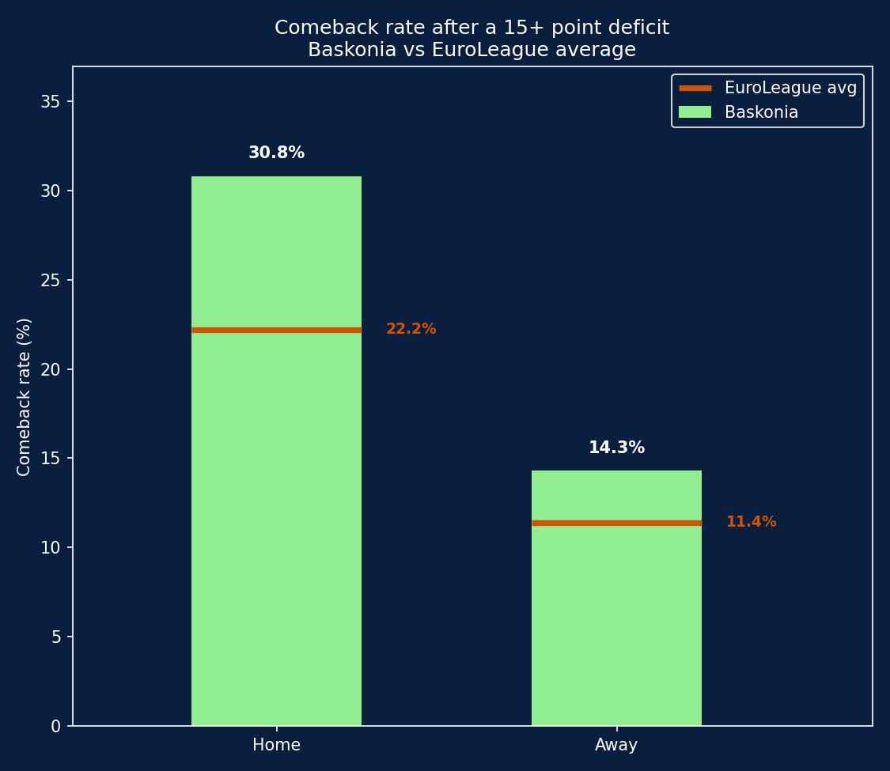

Baskonia: debunking (and confirming) the comeback myth
A play-by-play data analysis testing a specific claim about home court advantage: does the Fernando Buesa Arena crowd genuinely help Baskonia come back from big deficits?
30.8%
Baskonia home comeback rate (15+ pt deficit)
+8.6
points above league average, at home
p = 0.14
not statistically significant (home gap)
01 Background
Baskonia's Fernando Buesa Arena has a reputation as one of the loudest, most intense atmospheres in EuroLeague basketball. This project tests a concrete version of that claim using play-by-play data: when Baskonia falls behind by a large margin, does it recover more often at home than on the road, and more often than the rest of the league?
Rather than relying on anecdote, the analysis is built directly from event-by-event scoring data across nearly two decades of EuroLeague games.
02 Data & tools
Data source:Euroleague & Eurocup Datasets (Kaggle), specifically the play-by-play file, which logs every individual event (shots, rebounds, fouls, turnovers, etc.) with a running score
Scope: 541 Baskonia games (all seasons available), plus the full EuroLeague play-by-play dataset (2.6M+ events) for league-wide comparison
03 Defining "comeback"
Before running any analysis, it's worth being explicit about what counts as a real comeback, since a vague definition would make the whole exercise meaningless.
An initial idea was to check the score at the exact start of the 4th quarter and see how often a 10-point deficit at that point turned into a win. This produced a very clean setup, but the results were nearly unusable: Baskonia came back from a 10-point 4th-quarter deficit only twice in over 100 chances (1 out of 32 at home, 1 out of 90 away). The event was too rare to say anything meaningful about it.
The final, more robust definition:
Find the single worst deficit Baskonia faced at any point during the game (not just at the start of the 4th quarter)
Only consider games where that deficit was 15 points or worse
Check whether, from that low point onward, the score was tied or Baskonia took the lead at any point before the final buzzer
This is a lower bar than "won the game": it asks whether the team showed it could climb back into contention, not whether it completed the entire comeback and won. That trade-off is deliberate: it produces a large enough sample to say something statistically meaningful, while still requiring a real, sizeable deficit (15+ points) to qualify.
04 Results: Baskonia vs EuroLeague average

Comeback rate after a 15+ point deficit, Baskonia vs EuroLeague average
Venue
Baskonia rate
League rate
Home
30.8% (16/52)
22.2% (217/978)
Away
14.3% (17/119)
11.4% (213/1,864)
Two things stand out immediately:
The league-wide home advantage is real: across all of EuroLeague, teams recover from big deficits nearly twice as often at home (22.2%) as on the road (11.4%). This isn't unique to Baskonia, it's a structural feature of the sport.
Baskonia outperforms the league average in both settings, but the gap is far more pronounced at home (+8.6 points over the league average) than away (+2.9 points).
05 Is the gap statistically significant?
A large percentage gap doesn't automatically mean a real effect. With a relatively small sample of "big deficit" games (52 at home, 119 away), some of that gap could be due to chance. Two standard tests for comparing proportions were run to check.
Venue
Two-proportion z-test (p)
Fisher's exact test (p)
Odds ratio
Home
0.14
0.17
1.56
Away
0.35
0.37
1.29
Neither test reaches the conventional significance threshold (p < 0.05) in either venue. In plain terms: the pattern observed in the data is real, but the sample isn't large enough to rule out chance as an explanation, particularly away from home, where the gap is small to begin with.
The home gap comes closer to significance and has a larger effect size (odds ratio of 1.56, meaning Baskonia's odds of a comeback at home are about 56% higher than the league average), so it's the more interesting of the two results, but it should be read as suggestive, not confirmed.
06 Takeaways
A 10-point deficit at the start of the 4th quarter is too rare an event to analyze reliably for a single team. Redefining the metric around the game's overall worst deficit (15+ points, any point in the game) produced a far more usable sample.
Home court advantage on comebacks is a real, league-wide pattern in EuroLeague, not something specific to Baskonia.
Baskonia's comeback rate is higher than the league average both home and away, and the gap is considerably larger at home, consistent with (though not proof of) the Fernando Buesa Arena's reputation.
Statistical testing (z-test and Fisher's exact test) does not confirm the difference as significant at conventional thresholds, mainly due to sample size, a useful reminder that an interesting pattern in the data isn't the same as a proven effect.
A larger sample (e.g. a lower deficit threshold, or pooling multiple seasons of a wider set of "loud arena" teams) would be needed to state this claim with more statistical confidence.